一句话：把湘潭、长沙、株洲值得去的地方标在一张地图上，点开有图有介绍，还能排路线、打卡。
微信小程序 · 体验版 0.8.8 · 2026 年 10 月
第 2 页有体验码，可以先扫码试；最后一页想听大家意见。
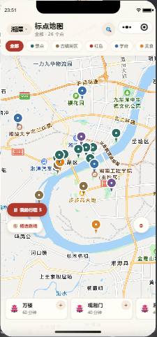
微信扫右边的码 → 打开「标点地图」体验版。不用注册，允许定位就行（拒绝也能看，只影响「距你多远」和打卡）。
体验二维码 11 月 5 日前有效，过期找我再要新的。
进小程序不需要登录，直接看到一座城市的全部点位。红色图钉是景点，其他颜色区分古镇、红色景点、学校、美食、酒店。
地图放大到一定级别，每个点位的图钉上方会浮出一张圆形实景照片，不用点进去就知道那是什么地方。
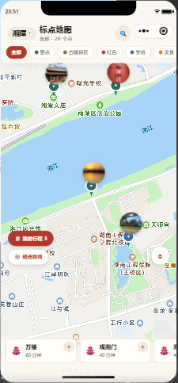
点图钉 → 底部弹出这张卡片：叫什么、属于哪类、建议玩多久、一句话介绍。
卡片往上滑是完整详情页：
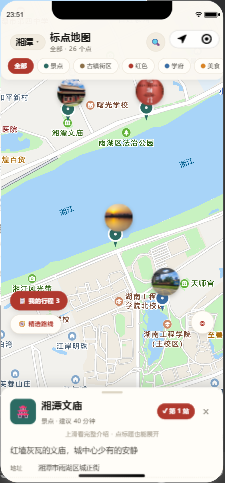
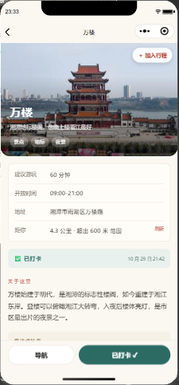
原来的固定「精选路线」已经下线，改成社区路线：谁都能把自己排好的行程传上来，别人觉得有用就点赞，点赞越多排得越前。
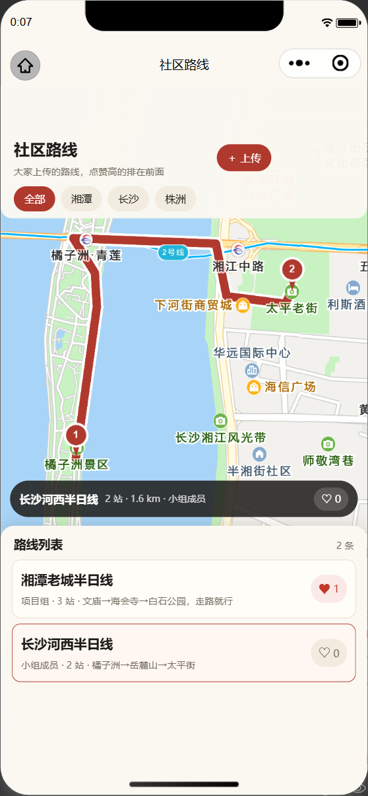
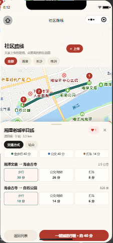
在「我的行程」拼好一条线，点「↑ 存为路线」就能发到社区。
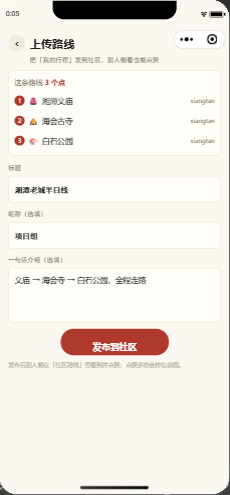
看到想去的地方，点「＋」加进行程。行程页会把它们连成一条线，自动算总时间、总里程。
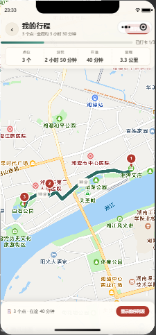
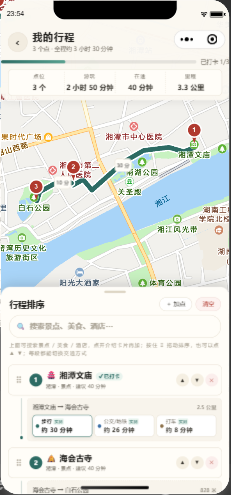
每个景点可以「打卡」。系统会判断你是不是真的到了附近（不同景点范围不同，景区 1 公里、小店 300 米），不是点一下就算。
搜名字、搜类型、搜拼音都行：
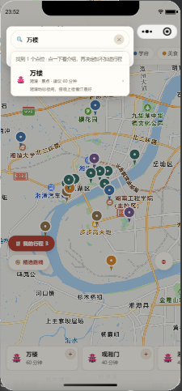
点位、路线、文案都在一个网页后台里改，不用碰代码：
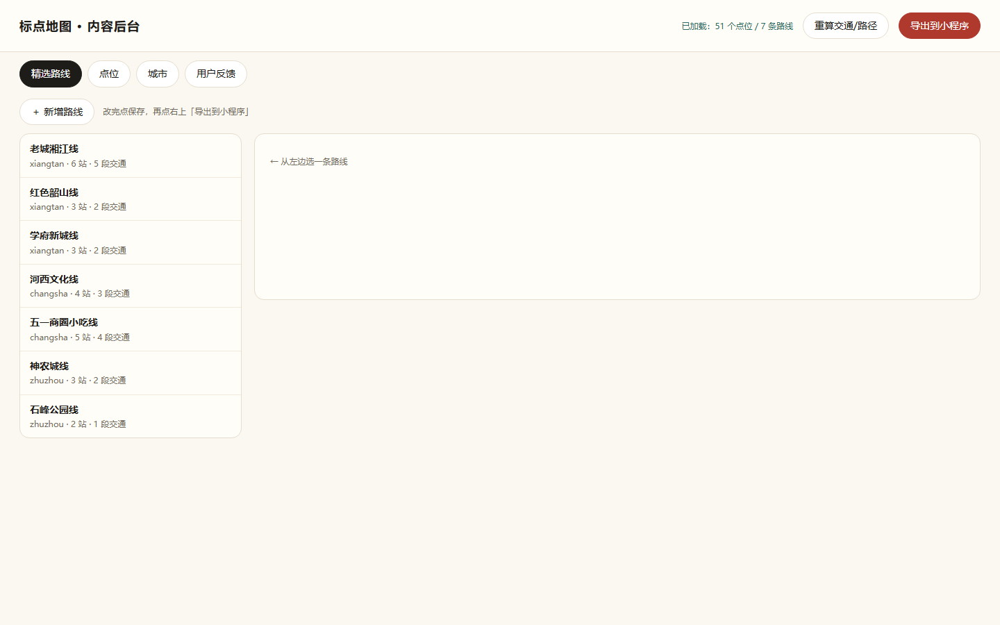
这是给我们自己人看的问题：下一版你想先做哪个？勾一下，在微信里回我就行。
勾完发我微信，一句话也行：「先做 XX」
· 点位只有 51 个，长沙、株洲偏少
· 6 家酒店还没有实景图
· 交通是提前算好的，没有实时路况
· 还没有「我的」页（足迹、完成度）
· 图片来自高德，正式发布要换成自己拍的
时间有限的话，建议先补数据 + 做答辩演示，功能按性价比挑。